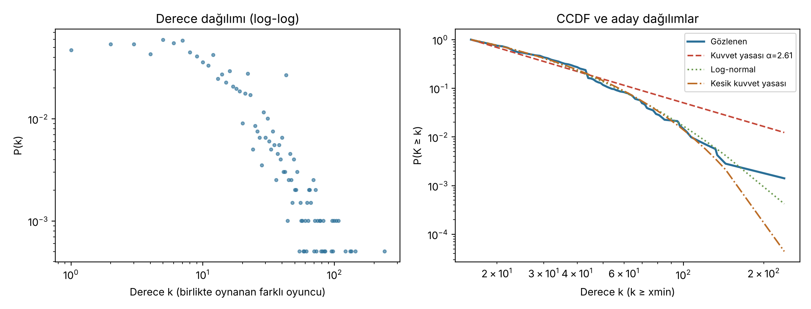
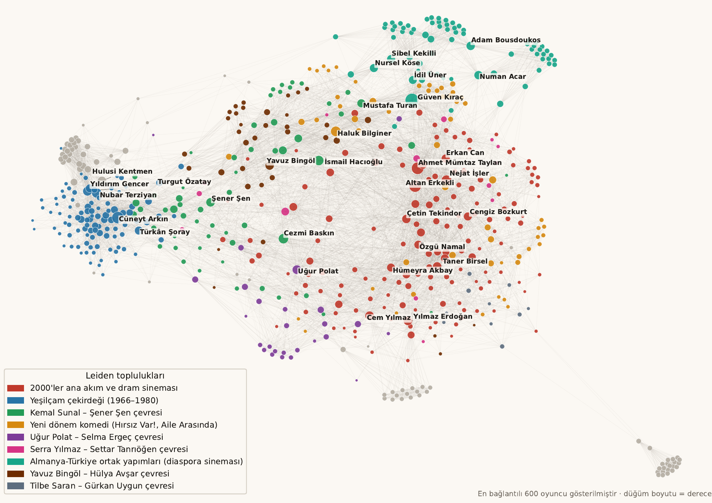
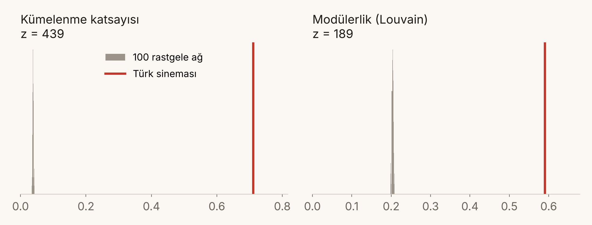
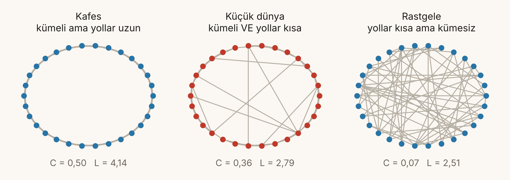
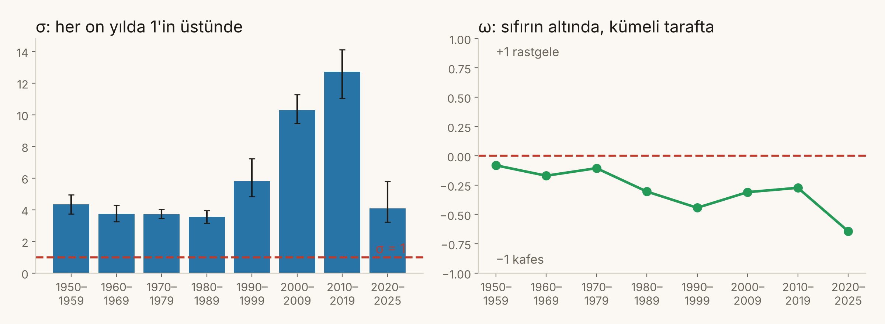

Kenar listesi (CSV), GraphML ve veri sözlüğü depoda.

Derece dağılımı ağır kuyruklu ama kuvvet yasası değil: log-normal daha iyi uyuyor (R = -4,86, p < 0,001). Ağ “ölçekten bağımsız” değil; çok bağlı oyuncu sayısı sınırlı.
| # | Oyuncu | Betweenness | Film | Yıllar |
|---|---|---|---|---|
| 1 | Cüneyt Arkın | 0,121 | 178 | 1964–2014 |
| 2 | Şener Şen | 0,043 | 38 | 1973–2017 |
| 3 | Türkân Şoray | 0,038 | 72 | 1961–2007 |
| 4 | Haluk Bilginer | 0,036 | 20 | 1990–2025 |
| 5 | Güven Kıraç | 0,036 | 18 | 1997–2019 |
Cüneyt Arkın: 239 farklı partner (derece 1.), köprü değeri ikinciye göre ≈2,8 kat.
İlk 5 köprü oyuncu birlikte çıkarılınca yalnızca 8 oyuncu kopuyor (rastgele 5 oyuncu: ortalama 0,8). Yollar biraz uzuyor ama alternatif yollar var.
Leiden modülerlik 0,60 · Louvain 0,59 · 10 tohumda kararlılık NMI ≈ 0,68 (Leiden), 0,67 (Louvain) — orta-iyi.


Rastgele ağlar: aynı derece dizisine sahip, bağlı configuration model (Viger–Latapy), 100 adet. Herkes aynı sayıda partnere sahip olsaydı bile bu kümelenme ortaya çıkmazdı.

Her on yıl için: o on yılın filmlerinden ağ kur → dev bileşen → 100 rastgele ağ ile Cr, Lr; aynı boyutta halka kafes ile Ckafes.

σ en düşük 3,6, en yüksek 12,7. 2000’ler ve 2010’lardaki yükselişin önemli kısmı ağın büyümesinden (rastgele kümelenme Cr 0,15 → 0,05).
Ayrım derecesi Yeşilçam’da 2,52–2,70, 2010’larda 3,43: dünya küçük kaldı ama biraz “uzadı”. ω hep negatif: ağ rastgeleden çok kümeli tarafa yakın.